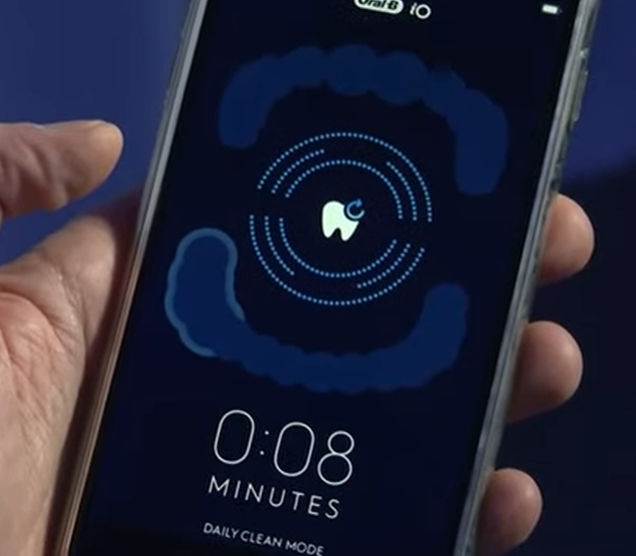
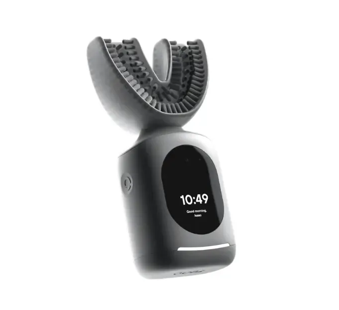

Show of hands… who wants AI in their mouth?

If you Google search “AI toothbrush”, two main results show up like they’re competing for the right to live inside your mouth: the Oral-B Genius X and the Feno Smartbrush. The Oral-B is the polite AI — it uses sensors + an app to coach your brushing, track pressure, and basically say “hey buddy… you missed a spot” in 16 different mouth zones. It’s been around for years, it’s still sold, and you can even watch the reveal like it’s the iPhone keynote of oral hygiene: youtube.com/watch?v=tZpVCvb4ujY . It’s also still on Amazon: amazon.com/.../dp/B084PPRXB5 .
The Genius X actually has a compelling argument: most people brush like they’re trying to remove the enamel, and it tries to fix that. The app tracks your routine, helps with coverage, can warn you if you’re pressing too hard, and lets you set goals and track gum-related habits. In other words, it’s less “Skynet” and more “your dentist in your pocket,” which is still horrifying, but in a modern, acceptable way.
Then there’s the Feno Smartbrush — the monster of toothbrushes. It brushes all your teeth at once, like a mouthguard designed by someone who hates time. It’s big, it’s fast, it claims a full clean in seconds, and it’s basically the “industrial pressure washer” approach to dentistry. There are cheaper “U-shape” full-mouth brushes out there too, but those are obviously less smart — because in the AI era, intelligence is measured in price tags and bristle counts. So… show of hands again… who wants AI in their mouth?